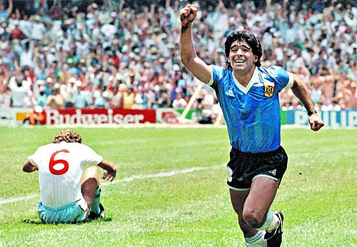
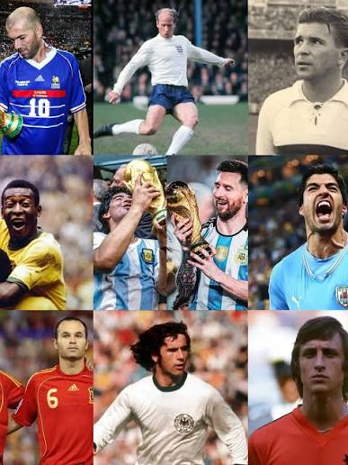

Goles Icónicos de los Mundiales
Los Mundiales de Fútbol han sido escenario de goles que marcaron la historia del deporte. Algunos fueron importantes porque definieron finales, mientras que otros sorprendieron por su calidad técnica y la emoción que despertaron en millones de aficionados alrededor del mundo. Estos momentos continúan siendo recordados como parte del legado de la Copa Mundial.

Momentos inolvidables
- Diego Maradona - "Gol del Siglo" frente a Inglaterra en México 1986.
- Andrés Iniesta - Gol que dio a España su primer título mundial en 2010.
- James Rodríguez - Espectacular volea elegida como el mejor gol del Mundial Brasil 2014.
- Mario Götze - Gol decisivo que le dio el campeonato a Alemania en la final de 2014.

¿Por qué son recordados?
Más allá del resultado, estos goles representan esfuerzo, talento y dedicación. Cada uno quedó grabado en la memoria de los aficionados y forma parte de la historia del fútbol mundial, siendo recordados generación tras generación.